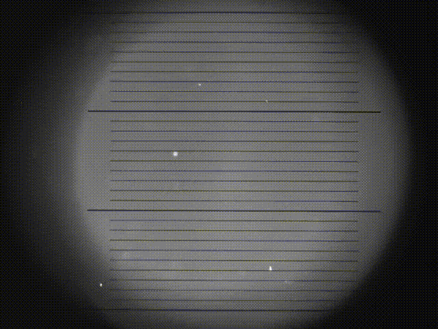

Objetivos
- Compreender o conceito de quantização da carga elétrica e seu significado histórico para a Física.
- Conhecer o princípio físico e a montagem experimental clássica de Robert Millikan para a determinação da carga do elétron.
- Analisar as forças atuantes em uma gota de óleo carregada imersa em um campo elétrico e deduzir as equações para o cálculo de sua carga e raio.
- Utilizar uma simulação computacional para realizar “medidas” de velocidades de gotas de óleo e, a partir delas, determinar a carga elementar.
- Interpretar graficamente os resultados experimentais como evidência da quantização.
Introdução
No início do século XX, uma das questões fundamentais da Física era a natureza da carga elétrica. Será que ela poderia assumir qualquer valor contínuo, ou existiria uma unidade fundamental, indivisível? Em 1909, o físico americano Robert Andrews Millikan, com a colaboração de Harvey Fletcher, concebeu um experimento engenhoso e preciso que responderia a essa pergunta: o experimento da gota de óleo.
Millikan não provou apenas a existência dessa unidade fundamental, a carga do elétron, mas também a mediu com notável precisão para a época. Seu trabalho lhe rendeu o Prêmio Nobel de Física em 1923 e solidificou a ideia de que a carga elétrica é quantizada, ou seja, só pode existir em múltiplos inteiros de um valor mínimo \(e = 1,602 \times 10^{-19}\) C.
Nesta aula, vamos explorar os fundamentos teóricos desse experimento histórico, analisar suas dificuldades práticas e, finalmente, utilizar uma simulação virtual moderna para refazer os passos de Millikan, coletando e analisando dados que nos levarão à mesma conclusão sobre a natureza discreta da carga elétrica.
A História de Robert Andrews Millikan
Robert Andrews Millikan nasceu em 1868 em Morrison, Illinois, e teve uma trajetória incomum para um físico: graduou-se em clássicos gregos no Oberlin College, tendo aprendido física “por acidente” quando foi convidado a ensinar a disciplina durante a graduação. Após obter seu doutorado na Universidade Columbia em 1895, estudou na Alemanha e retornou aos Estados Unidos a convite de Albert A. Michelson para integrar o recém-criado Laboratório Ryerson na Universidade de Chicago, onde permaneceu por 25 anos e desenvolveu seus experimentos mais importantes. Em 1921, Millikan mudou-se para o Instituto de Tecnologia da Califórnia (Caltech), onde atuou como diretor do laboratório de física e presidente do conselho executivo, transformando a instituição em um dos principais centros de pesquisa dos Estados Unidos.

O experimento que lhe rendeu o Prêmio Nobel de Física em 1923 foi realizado em colaboração com seu estudante de doutorado Harvey Fletcher. Em 1909, eles desenvolveram o célebre experimento da gota de óleo, que permitiu medir com precisão a carga elementar do elétron. A substituição da água por óleo foi crucial para evitar a evaporação das gotículas durante as observações. Millikan demonstrou que todas as cargas medidas eram múltiplos inteiros de um valor fundamental (\(1,592 \times 10^{-19}\,C\)), próximo ao valor moderno de \(1,602 \times 10^{-19}\,C\). Curiosamente, Millikan inicialmente duvidava da existência do elétron como partícula discreta, mas seu próprio experimento convenceu a comunidade científica da natureza quantizada da carga elétrica.

Além desse trabalho seminal, Millikan fez contribuições importantes para a verificação experimental da equação fotoelétrica de Einstein (determinando o valor da constante de Planck) e cunhou o termo “raios cósmicos” para descrever a radiação de origem extraterrestre que investigou no Caltech. Sua carreira, no entanto, não esteve isenta de controvérsias: há debates sobre a seleção seletiva de dados em suas publicações do experimento da gota de óleo, além da questão do crédito devido a Harvey Fletcher, cuja contribuição foi por décadas subestimada por um acordo entre ambos. Millikan faleceu em 1953, deixando um legado como um dos físicos experimentais mais influentes do século XX.

O Experimento de Millikan: Princípio Físico
O experimento baseia-se no equilíbrio de forças sobre minúsculas gotas de óleo carregadas, imersas no ar e sujeitas à ação da gravidade e de um campo elétrico controlado. O aparato consiste em duas placas metálicas paralelas (um capacitor) montadas horizontalmente, entre as quais é aplicada uma diferença de potencial (d.d.p.) ajustável, criando um campo elétrico vertical e uniforme.
Detalhes do Aparato Experimental
A câmara principal do experimento é um capacitor de placas paralelas cuidadosamente construído para garantir um campo elétrico uniforme em seu interior. A placa superior possui um minúsculo orifício por onde as gotas de óleo são introduzidas. Um pulverizador (atomizador) é utilizado para borrifar finas gotículas de óleo, geralmente óleo de silicone ou de relógio, escolhidos por sua baixa volatilidade, evitando a evaporação durante as observações.

Todo o conjunto é iluminado lateralmente por uma fonte de luz potente, que faz as gotas brilharem contra um fundo escuro. A observação é feita através de uma luneta de pequeno aumento acoplada a uma escala micrométrica gravada na ocular, permitindo medir com precisão os deslocamentos das gotas. Um comutador permite inverter rapidamente a polaridade das placas, alterando o sentido da força elétrica sobre as gotas carregadas. O sistema é completado por cronômetros para medir os tempos de subida e descida, e uma fonte de tensão variável que permite ajustar a intensidade do campo elétrico.
Fenomenologia do Experimento
Ao acionar o pulverizador, finas gotas de óleo são espalhadas acima da placa superior. Algumas delas atravessam o orifício e ingressam no espaço entre as placas do capacitor. Durante o processo de atomização, as gotas adquirem carga elétrica devido ao atrito com o bico do pulverizador e com o ar – um fenômeno conhecido como eletrização por atrito. Dessa forma, cada gota carrega consigo uma pequena quantidade de carga, que pode ser positiva ou negativa.

Uma vez dentro da câmara, o observador seleciona uma gota que esteja bem focalizada e visível na luneta. O movimento dessa gota pode então ser controlado manipulando-se a tensão aplicada às placas. Quando o campo está desligado, a gota cai sob ação exclusiva da gravidade, rapidamente atingindo uma velocidade terminal constante devido à resistência do ar (força de arrasto viscoso). Ao ligar o campo elétrico, a gota pode acelerar para cima ou para baixo, dependendo do sinal de sua carga e da polaridade das placas. Ajustando a tensão, é possível até mesmo fazer com que a gota fique estacionária, situação em que a força elétrica equilibra exatamente a força peso.

O procedimento fundamental consiste em medir, para uma mesma gota, sua velocidade de descida sob ação apenas da gravidade (campo desligado) e sua velocidade de subida (ou descida mais lenta) quando o campo elétrico está ligado. Invertendo a polaridade com o comutador, obtêm-se medidas complementares que, combinadas, permitem determinar tanto o raio da gota quanto sua carga elétrica total, sem necessidade de conhecer previamente nenhum desses valores.

A Simulação Virtual: “Realizando” o Experimento
Para superar as enormes dificuldades práticas do experimento real (como a necessidade de horas de coleta e a perda constante de gotas), utilizaremos a simulação disponível no Laboratório Virtual de Física da UFC.
A simulação reproduz fielmente os princípios do experimento, mas com a conveniência de fornecer instantaneamente as velocidades de subida e descida (\(v_1\) e \(v_2\)) para cada gota, sob uma tensão \(U\) escolhida pelo usuário. Isso nos permite focar na análise dos dados, que é o coração da descoberta científica.
Fundamentos Teóricos
Esta prática simula a experiência feita por Robert Millikan, em 1909, que demonstrou a existência de um valor mínimo para a carga elétrica, a carga elementar. Essa carga é a carga do elétron.
Nesta experiência, gotas de óleo produzidas por um pulverizador são lançadas em uma região onde existe um campo elétrico produzido pela aplicação de uma diferença de potencial entre as placas paralelas de um capacitor. Devido ao atrito entre o óleo e as paredes do pulverizador, as gotas formadas ficam eletricamente carregadas, portanto, sujeitas à ação do campo elétrico.
Na realidade, cada gota sofre a ação de quatro forças:
- Força peso (\(F_g\)).
- Força elétrica (\(F_e\)).
- Força de atrito viscoso com o ar (\(F_v\)).
- Força do empuxo (por ser muito menor que as demais, será desprezada nesta análise).
Quase imediatamente após a gota entrar no capacitor, essas forças se equilibram e a gota passa a se mover com velocidade constante, denominada velocidade terminal.
Forças Atuantes
Considerando-se as três forças principais, temos:
A força viscosa sobre uma esfera (a gota) de raio \(r\) e velocidade \(v\) em um fluido de viscosidade \(\eta\) é dada pela lei de Stokes: \[F_v = 6\pi r \eta v\]
O peso de uma esfera de massa \(m\), volume \(V\) e densidade \(\rho\) no campo gravitacional da Terra é: \[F_g = mg = \rho V g = \frac{4}{3}\pi r^3 \rho g\]
A força elétrica é dada por: \[F_e = qE = \frac{qU}{d}\] onde \(U\) é a voltagem entre as placas do capacitor e \(d\) é a distância entre elas.
Gota se deslocando para baixo
Quando a gota desce, temos:
- \(F_v\) (para cima).
- \(F_g\) (para baixo).
- \(F_e\) (para baixo).
Somando vetorialmente as três forças e igualando a zero (condição de equilíbrio dinâmico com velocidade terminal): \[F_v - F_g - F_e = 0\]
Substituindo as expressões das forças: \[6\pi r \eta v_1 - \frac{4}{3}\pi r^3 \rho g - \frac{qU}{d} = 0\]
Isolando a velocidade terminal de descida \(v_1\): \[v_1 = \frac{1}{6\pi r \eta}\left(\frac{4}{3}\pi r^3 \rho g + \frac{qU}{d}\right) \quad (1)\]
Gota se deslocando para cima
Quando a gota sobe (com a polaridade invertida pelo comutador), temos:
- \(F_v\) (para baixo).
- \(F_g\) (para baixo).
- \(F_e\) (para cima).
A condição de equilíbrio dinâmico é: \[F_e - F_g - F_v = 0\]
Substituindo as expressões: \[\frac{qU}{d} - \frac{4}{3}\pi r^3 \rho g - 6\pi r \eta v_2 = 0\]
Isolando a velocidade terminal de subida \(v_2\): \[v_2 = \frac{1}{6\pi r \eta}\left(\frac{qU}{d} - \frac{4}{3}\pi r^3 \rho g\right) \quad (2)\]
Determinação do Raio e da Carga
Combinando as equações (1) e (2) – somando-as e subtraindo-as – obtemos, respectivamente, expressões para o raio \(r\) e para a carga \(q\) da gota:
\[r = C_2 \sqrt{v_1 - v_2}\]
\[q = C_1 \frac{v_1 + v_2}{U} \sqrt{v_1 - v_2}\]
onde \(C_1\) e \(C_2\) são constantes dadas por:
\[C_1 = \frac{9\pi d}{2} \sqrt{\frac{\eta^3}{g\rho}}\]
\[C_2 = \frac{3}{2} \sqrt{\frac{\eta}{g\rho}}\]
Constantes do Experimento
Utilizando os seguintes valores:
- Distância entre as placas do capacitor: \(d = 2{,}50\,\text{mm}\).
- Densidade do óleo de silicone: \(\rho = 1{,}03 \times 10^3\,\text{kg/m}^3\).
- Viscosidade do ar: \(\eta = 1{,}82 \times 10^{-5}\,\text{kg/(m·s)}\).
- Aceleração da gravidade: \(g = 9{,}81\,\text{m/s}^2\).
Obtemos os valores numéricos das constantes:
\[C_1 = 2{,}73 \times 10^{-11}\,\text{(m/s)}^{1/2}\]
\[C_2 = 6{,}37 \times 10^{-5}\,\text{kg·(m·s)}^{1/2}\]
Evidência da Quantização
Millikan, após medir a carga de diversas gotas, ao representar em um gráfico o valor da carga de cada gota em função do raio, observou a formação de patamares em intervalos regulares, como ilustrado na figura abaixo.

Concluiu-se, então, que a carga elementar é quantizada e que uma gota poderia conter uma, duas, três, ou mais dessas unidades fundamentais de carga. Assim foi possível determinar o valor da carga do elétron.
Observação: O gráfico acima é apenas um exemplo ilustrativo de como se apresentam os resultados do experimento da gota de óleo de Millikan. Este gráfico não é o gráfico original de Millikan.
Conclusão
O experimento da gota de óleo de Millikan é um marco na história da Física, não apenas pela beleza de sua concepção, mas pela solidez de sua conclusão. Ao combinar a medida de forças macroscópicas (peso, viscosa, elétrica) com a observação do movimento de um objeto microscópico, Millikan foi capaz de inferir uma propriedade fundamental da matéria em sua escala mais elementar: a quantização da carga elétrica.
Através da simulação, pudemos vivenciar, de forma simplificada, o processo de coleta e análise de dados que levou a essa descoberta. Ao calcular as cargas de diversas gotas e observar a formação dos patamares em um gráfico, reproduzimos a evidência central que convenceu o mundo científico da existência do elétron como portador de uma unidade fundamental de carga.
Fica claro que a ciência avança não apenas por grandes insights teóricos, mas também pela engenhosidade experimental capaz de tornar o invisível, visível, e o imensurável, quantificável. A carga do elétron, \(e \approx 1,6 \times 10^{-19}\) C, é hoje uma das constantes fundamentais da natureza, um pilar sobre o qual se constrói nossa compreensão da estrutura da matéria e do eletromagnetismo.
Exercícios De Fixação
- 1.1)
- Sobre o contexto histórico do experimento da gota de óleo, é correto afirmar que:
- O experimento foi realizado em 1909 por Robert Millikan em colaboração com Harvey Fletcher, e Millikan inicialmente duvidava da existência do elétron, mas seu próprio experimento convenceu a comunidade científica da natureza quantizada da carga elétrica.
- Millikan realizou o experimento sozinho, sem qualquer colaborador, e já acreditava na existência do elétron como partícula discreta antes de seus resultados.
- O experimento foi realizado por Albert Einstein e Robert Millikan juntos, com o objetivo de confirmar a teoria da relatividade.
- Millikan realizou seu experimento na Universidade de Cambridge, utilizando gotas de água para evitar problemas com evaporação.
- O experimento da gota de óleo foi realizado apenas em 1923, após Millikan receber o Prêmio Nobel, como forma de confirmar seus resultados teóricos.
- 2.2)
- Qual foi a principal razão para a substituição da água por óleo no experimento de Millikan?
- O óleo é mais denso que a água, facilitando a visualização das gotas.
- A água evaporava rapidamente devido ao calor gerado pela fonte de luz, tornando as observações imprecisas, enquanto o óleo de silicone ou de relógio possui baixa volatilidade.
- O óleo é um isolante elétrico perfeito, enquanto a água conduz eletricidade, interferindo nas medidas.
- A água congela em temperaturas ambiente, enquanto o óleo permanece líquido.
- O óleo possui menor viscosidade, permitindo velocidades mais altas e fáceis de medir.
- 2.3)
- O que acontece com uma gota de óleo carregada dentro do capacitor quando as forças que atuam sobre ela se equilibram?
- A gota para imediatamente e permanece estacionária.
- A gota continua em movimento, mas agora com aceleração constante.
- A gota passa a se mover com velocidade constante, chamada de velocidade terminal.
- A gota oscila verticalmente entre as placas do capacitor.
- A gota é ejetada para fora da região entre as placas.
- 2.4)
- O que Millikan observou ao representar em um gráfico os valores das cargas de diversas gotas em função de seus raios?
- Uma reta crescente, indicando que gotas maiores possuem sempre cargas proporcionalmente maiores.
- Pontos distribuídos aleatoriamente, sem qualquer padrão definido.
- Uma curva exponencial, sugerindo que a carga aumenta com o quadrado do raio.
- Patamares horizontais em intervalos regulares, indicando que as cargas eram sempre múltiplas inteiras de um valor fundamental.
- Uma reta decrescente, mostrando que gotas menores possuem mais carga.
- 2.5)
- O conceito de quantização da carga elétrica, demonstrado por Millikan, significa que:
- A carga elétrica pode assumir qualquer valor real, dependendo do material.
- A carga elétrica só existe em corpos macroscopicamente grandes.
- A carga elétrica de um corpo é sempre um múltiplo inteiro de uma unidade fundamental, a carga do elétron (\(e = 1,6 \times 10^{-19}\) C).
- A carga elétrica varia continuamente com a temperatura do corpo.
- A carga elétrica é uma propriedade exclusiva dos elétrons, não podendo ser encontrada em prótons.
ATENÇÃO: As questões de 5 a 6 deverão ser realizadas a partir de uma simulação computacional.
- 2.6)
- Acesse a simulação através do link: Laboratório Virtual de Física - UFC. Identifique os principais controles da interface: botão NOVA GOTA, botão BORRIFAR, controle deslizante de POTENCIAL (V) e a chave COMUTADOR.
Pergunta: Explique, com suas próprias palavras, qual é a função de cada um desses quatro controles na simulação. Como eles se relacionam com os componentes do experimento real descritos na seção anterior?
- 2.7)
- Siga o procedimento para gerar uma gota e medir suas velocidades:
- Clique em NOVA GOTA e depois em BORRIFAR.
- Ajuste o POTENCIAL para um valor de sua escolha (por exemplo, 250 V). Anote este valor.
- Observe e anote o módulo da velocidade de descida (\(v_1\)) da gota.
- Acione o COMUTADOR e observe a velocidade de subida (\(v_2\)). Anote seu módulo.
Pergunta: Considerando que a simulação já fornece os valores das velocidades, quais são as vantagens desse ambiente virtual em relação ao experimento real, que exigia o uso de cronômetros manuais e luneta de observação? Cite ao menos duas vantagens mencionadas no roteiro original.
- 2.8)
- Utilizando as fórmulas fornecidas no roteiro e as constantes \(C_1 = 2,73 \times 10^{-11}\) (com unidades adequadas) e \(C_2 = 6,37 \times 10^{-5}\) (com unidades adequadas), calcule o raio e a carga da gota que você observou na Questão 2.
\[r = C_2 \sqrt{v_1 - v_2}\] \[q = C_1 \frac{v_1 + v_2}{V} \sqrt{v_1 - v_2}\]
Pergunta: Apresente os cálculos passo a passo e os resultados obtidos para o raio (em metros) e para a carga (em Coulombs) da gota analisada. Não se esqueça de utilizar as velocidades em m/s e a voltagem em Volts, conforme indicado no roteiro.
- 2.9)
- Repita o procedimento da Questão 2 para, no mínimo, 10 gotas diferentes. Anote em uma tabela os valores de \(V\), \(v_1\) e \(v_2\) para cada gota. Em seguida, calcule o raio e a carga de cada uma delas, utilizando as mesmas fórmulas da Questão 3.
Pergunta: Construa um gráfico de dispersão (pode ser em papel milimetrado ou utilizando um software como Excel, Google Planilhas ou similares) com os valores da carga \(q\) no eixo vertical (Y) e do raio \(r\) no eixo horizontal (X). Insira o gráfico em sua resposta ou descreva detalhadamente como você o construiu e o padrão observado.
- 2.10)
- Observe atentamente o gráfico que você construiu na Questão 4.
Pergunta a): O que significa o fato de os pontos se agruparem em torno de linhas horizontais (patamares)? O que esses patamares representam em termos da teoria da quantização da carga elétrica?
Pergunta b): Identifique no seu gráfico os patamares correspondentes a \(e\), \(2e\) e \(3e\) (se houver). Para cada gota, estime quantas cargas elementares (\(n = 1, 2, 3...\)) ela possui, com base no patamar em que se encontra. Em seguida, calcule o valor experimental da carga do elétron para cada gota usando a relação: \[e_{gota} = \frac{q_{gota}}{n}\] Por fim, calcule o valor médio de \(e\) obtido a partir de todas as suas gotas e compare com o valor aceito na literatura (\(e = 1,602 \times 10^{-19}\) C). Calcule o erro percentual.
\[ \text{E\%} = \left|\dfrac{V_{\text{teórico}} - v_{\text{medido}}}{V_{\text{teórico}}} \right | \times 100\% \]
Recomendações de Estudo
Referências
- DIAS, Nildo Loiola. Roteiro para simulação: experiência da gota de óleo de Millikan. [S.l.: s.n.], 2026. 8 p. Disponível em: https://001ede9d-4490-47d9-9863-080a826634bd.filesusr.com/ugd/e02095_a96a19f36ef74a049384941d90265a32.pdf. Acesso em: 10 mar. 2026.
- FLETCHER, Harvey. My work with Millikan on the oil-drop experiment. Physics Today, Melville, v. 35, n. 6, p. 43–47, 1982. https://doi.org/10.1063/1.2915126
- HALLIDAY, David; RESNICK, Robert; WALKER, Jearl. Fundamentos de Física: óptica e física moderna. 10. ed. Rio de Janeiro: LTC, 2016. v. 4.
- MILLIKAN, Robert Andrews. On the elementary electrical charge and the Avogadro constant. Physical Review, College Park, v. 2, n. 2, p. 109–143, 1913. https://doi.org/10.1103/PhysRev.2.109
- NUSSENZVEIG, Herch Moysés. Curso de Física Básica: ótica, relatividade, física quântica. 2. ed. São Paulo: Blucher, 2014. v. 4.
- TIPLER, Paul Allen; LLEWELLYN, Ralph A. Física Moderna. 6. ed. Rio de Janeiro: LTC, 2017. 530 p.
- YOUNG, Hugh D.; FREEDMAN, Roger A. Física IV: ótica e física moderna. 14. ed. São Paulo: Addison Wesley, 2016. 448